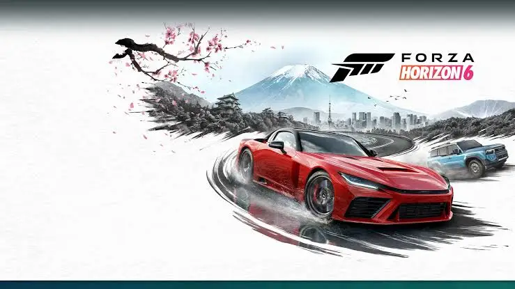
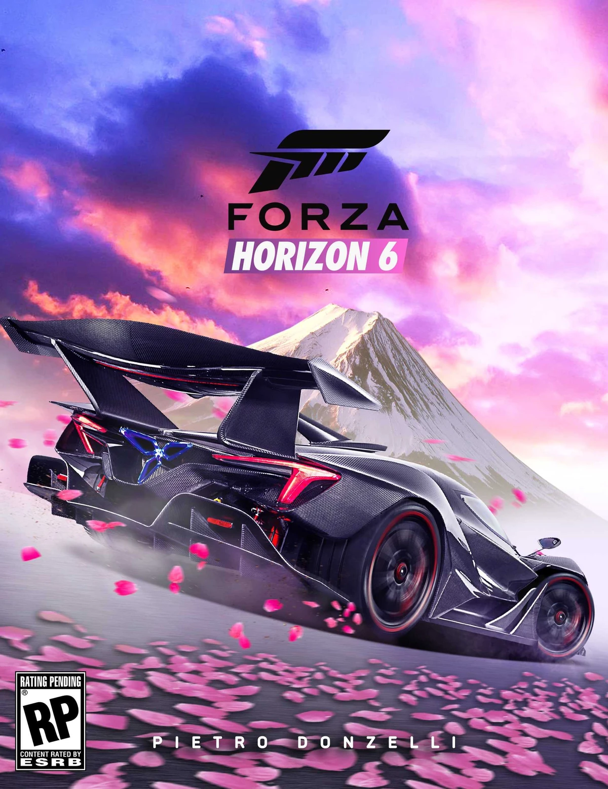
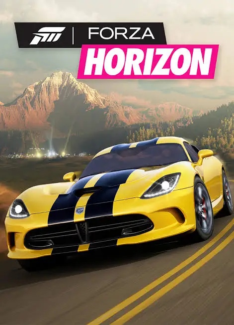
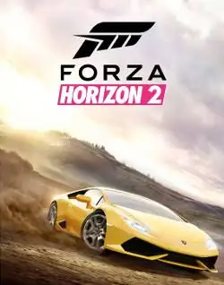
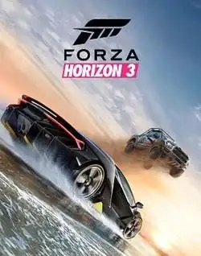
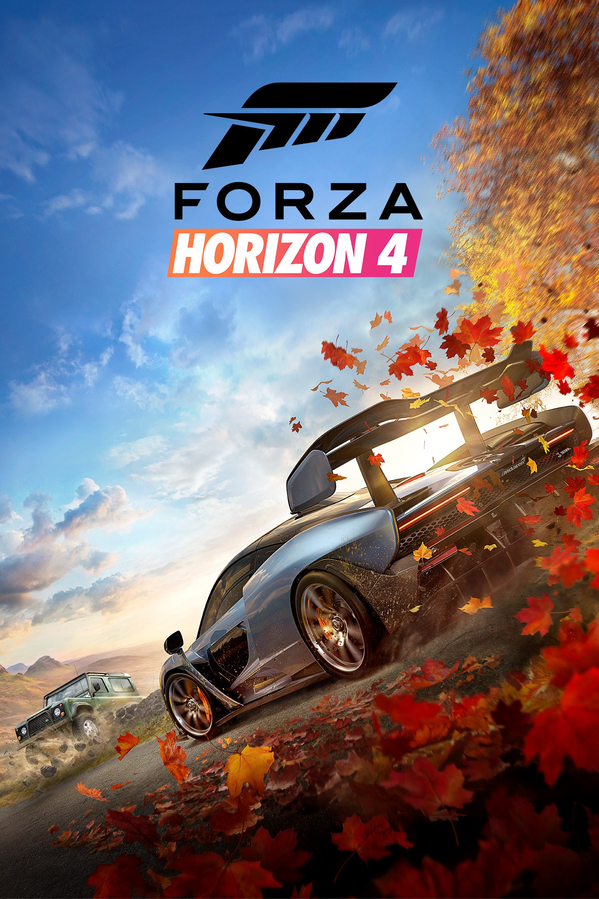
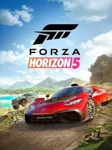
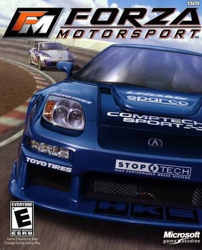

Forza Horizon 6 — це масштабна гоночна аркада, дія якої розгортається в живописній Японії. Гравці починають шлях у ролі «туриста» і повинні довести свою майстерність, досліджуючи Токіо та околиці за кермом більше 550 реальних автомобілів, щоб стати легендою фестиваля Horizon.


Початок окремої серії Horizon. На відміну від Motorsport, гра пропонує відкритий світ, у якому можна вільно досліджувати місцевість і брати участь у фестивалі перегонів.

Події гри відбуваються на півдні Франції та в Італії. Відкритий світ став більшим, а можливостей для дослідження — ще більше.

Дія гри перенесена до Австралії. Гравці можуть не лише брати участь у перегонах, а й керувати власним фестивалем Horizon.

Події відбуваються у Великій Британії. Головною особливістю стали пори року, які змінюють зовнішній вигляд світу та умови водіння.

Наймасштабніша гра серії Horizon. Відкритий світ Мексики пропонує пустелі, джунглі, міста, вулкани та сотні автомобілів для перегонів і дослідження.

Перша гра серії Forza. Вона поклала початок франшизі та запропонувала гравцям реалістичні перегони, великий вибір автомобілів і можливість їхнього тюнінгу.